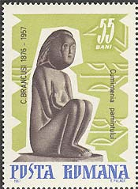
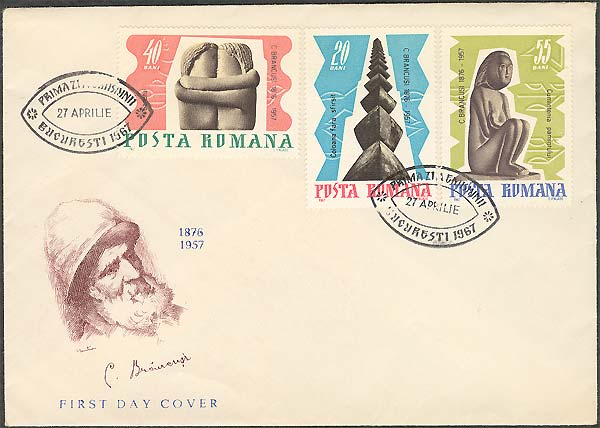
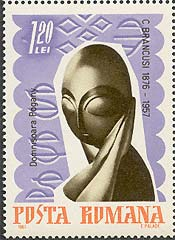
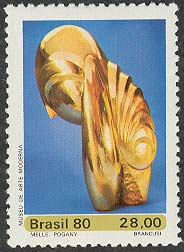
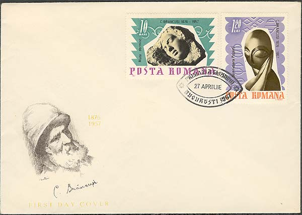

Constantin Brancusi
The First Masterpieces
Brancusi's Kiss, carved in 1907 (Art Museum, Craiova), adds a new dimension to that concept of sculpture that aims at absorbing the essence and denies the ephemeral, the glittering yet fragile effect of light. In no other work of Brancusi's creation is the idea of the materiality so clearly illustrated. And yet, the theme in Brancusi's interpretation rules out all implications other than that of a pure spiritual elevation.
Note on the pair of stamps shown below the beginning of the text: "10 ani dela moartea sculptorului C. Brancusi - 1967." This means: "10 years from death of the sculptor C. Brancusi - 1967." Unfortunately, the word "dela" is incorrectly written, it should be written "de la".
Two decades later, the sculptor was to return to this theme. The Kiss of 1925, at the Paris Museum of Modern Art, preserved almost unaltered the essential features of the 1907 statue. The stone is however hewn in a coarser structure, with sharper angles and the form of the arms - and in particular of the hands - evoke more clearly the mineral materiality of the stone. Wisdom of the Earth (limestone, 1907, Art Museum of Bucharest) and Kiss, hieratic figurations of the human being, stand at the mystery-laden boundary where life emerges out of the inanimate form of the stone, proclaiming the creative power lying within mineral structures.

Some authors have - often justly - compared these works with the Egyptian or Asian statuary. And yet, Brancusi's sculpture is not a synthesis of extant forms, but rather a re-discovery of those profound strata where the old cultures communicate with one another. "Brancusi appears to have found the source of 'Romanian' inspiration, only after encountering certain 'primitive' and archaic artistic creations - a fact which seemed paradoxical to several art historians", writes Mircea Eliade.

Domnisoara (Miss) Pogany (bronz, 1913) is one of masterpieces of the Storck Collection, in Bucharest. That who looked one time in the closed eyes of this fascinating Miss will probably never forget them.


A later version of this sophisticated work was issued by Brazil post. Notice the same position of both hands, supporting the head.

IPlease point on stamps with the mouse for more information. For the main source of the presentation, please click here.


| Published:
05/20/2002. Revised:
11/08/06. Copyright © 2002 - 2004 by Victor Manta, Switzerland. All rights reserved worldwide. |